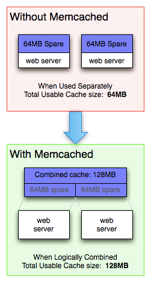

Memcached
Table of Contents
1 概念
- 一个高性能、分布式的内存对象缓存系统（memory object caching system）。
- 使用键值对，缓存数据库查询、API 调用、页面渲染产生的小块数据（字符串、对象）。

- 所有服务器共用一个虚拟内存池（virtual pool of memory）。
- 一个指定的数据总是在网络集群（web cluster）中一个固定的位置读写。
1.1 组成
| 客户端 | 拥有一个可用的 Memcached 服务器列表 |
|---|---|
| 客户端哈希算法 | 通过输入的键，选择一个服务器 |
| 服务器端 | 将输入的键值对存入一个内部哈希表 |
| 服务器端算法 | 内存不足时，删除过时数据，或复用内存 |
1.2 设计理念
| 简单键值存储 | 存储的数据中包含：键、原始数据（raw data）、过期时间、可选 flag |
|---|---|
| 不关心数据结构，在存储数据前需要进行序列化 | |
| 客户端的任务 | 如何把数据发送到特定的服务器 |
| 如何处理连接不到服务器的情况 | |
| 如何从服务器取得键 | |
| 服务器端的任务 | 如何接收数据 |
| 如何处理过期数据 | |
| 服务器之间无通信 | 服务器不了解彼此的存在，不存在串扰（crosstalk）、同步、广播 |
| 机器之间的交互越少，扩展性（scalability）越好 | |
| 时间复杂度 | （尽量做到）所有的操作都是 O(1) 复杂度 |
| 删除数据机制 | 默认是 LRU（Least Recently Used）原则，删除（flush）不使用的数据，保留经常访问的数据 |
| 数据也有指定的过期时间，以防止返回过时（stale）的数据 |
1.3 应用场景
| 数据库查询结果 | |
|---|---|
| 对象数据 | 考虑是否有必要序列化整个对象。 |
| 从缓存读取对象数据可以写在 constructor 里。 | |
| 序列化应当尽量简单高效，对象的 setup、teardown 操作会耗费 CPU。 | |
| 页面渲染结果 | 套用模板可能比较耗时，可以把套用模板之后的页面文本（HTML）放入缓存。 |
2 原理
2.1 数据结构
| item | 一个键值对（key + value + flags） |
|---|---|
| chunk | 保存数据的最小单位 |
| 大小固定，数据放入之后的剩余空间无法利用 | |
| slab | 由同样大小的 chunk 组成的集合 |
| 不同 slab 之间的 chunk 的比例关系由增长因子决定 | |
| page | 内存分页，固定大小为 1M，是 Memcached 申请内存的最小单位 |
| 分页大小 = chunk 大小 x chunk 数量 | |
| 分配给某个 slab 的内存页，不能再重新分配给其他 slab | |
| growth factor | 增长因子，默认值 1.25 |

2.2 存储过程
- 计算 item 大小，选取合适的 slab（能放下该 item 的最小的 slab）。
- 如果对应的 slab 不存在，申请一个 page，该 item 存入 slab 中的 chunk。
- 如果对应的 slab 存在，按照以下优先级选择 chunk。
- expired（free_chunks）
- deleted
- 未使用过的（free_chunks_end）
- 如果对应的 slab 存在且已经存储满了，申请一个新的 page，分为对应大小的 chunk，继续存储。
- 如果对应的 slab 存在且已经存储满了，且达到了最大内存使用，将使用 LRU 算法，清除 item（eviction）。
2.3 过期
| 0 | 永远不过期 |
|---|---|
| <= 30 * 24 * 3600 | 解读为秒数 |
| > 30 * 24 * 3600 | 解读为 UNIX 时间戳 |
| Lazy expiration | 不主动将数据标为过期，只有查询到这个数据时，才会检查是否过期。 |
|---|---|
2.4 服务器选择
| 余数算法 | 简单、高效，但在服务器增减时，会导致大量的缓存失效 |
|---|---|
| 散列算法（一致性哈希） | 添加服务器时，只有一台服务器上的部分缓存会受到影响 |
2.4.1 一致性哈希（consistent hashing）

算法步骤：
- 求出每个服务器节点的哈希值，分布到 0～2^32 的圆（continuum）上。
- 求出 key 的哈希值，映射到圆上。
- 从映射位置开始顺时针查找， 将数据保存到找到的第一个节点上。
3 配置
KEY_MAX_LENGTH |
最大 key 长度 |
|---|---|
POWER_BLOCK |
最大单个 item 大小 |
REALTIME_MAXDELTA |
最大过期时间（过期时间设为 0 时即按照此最大时间过期） |
chunk_size |
初始 chunk 大小 |
|---|---|
growth_factor |
增长因子 |
maxconns |
最大软连接数（？） |
服务器列表
- 使所有客户端上的服务器列表配置一致，否则各客户端的 map 方式可能会不一致，产生混乱；
- 可以在服务器列表上设置「权重」，或者使某个服务器在列表中多次出现，调整服务器被选中概率；
连接对象（connection object）
- 如果每次连接服务器都初始化一个连接对象，连接数过多，可能会泄露（leak connection）；
- 需要搞清楚客户端的机制（何种操作是否会创建连接）；
| 故障切换（failover） | 一个服务器故障时，其上的所有 key 会被重新分配到其他服务器 |
|---|---|
| 故障（fail） | 一个服务器连接不上时，作为 cache miss 处理 |
- 当故障的服务器重新上线时，这两种机制都会产生新旧数据版本混乱的问题，但「故障」机制的影响更小；
压缩
- 对大块数据进行压缩，可以减少读取时间；
- 对小块数据进行压缩，可能反而不经济，浪费 CPU；
- 客户端可以配置进行、不进行压缩的文件大小范围；
4 优化
chunk
- 存储超过 1M 的数据会使用多个 chunk，导致计算量和时间增加；
- 对于不同的业务，可以分配使用不同的 Memcached 实例进行特别的设置，以更有效地利用空间；
key
- Memcached 不仅对 key 进行哈希，同时也保存原本的 key，所以 key 应当尽量短，以节省空间；
- 避免使用用户输入作为 key；
- ASCII（基于文本的）通信协议支持空格和换行字符，要确保这些字符不会出现在 key 中；
- key 要包含一定附加信息，因为 md5 之后的 key 无法识别来源，可以有两种做法：
- 把查询语句和 md5 对照表输出到外部文件；
- 给每个查询语句分配一个 id，将 id 加入 key 中；
虚拟节点
- 在服务器数量比较少的时候，可以增加虚拟节点，保证服务器能均匀地分布在圆环上；
线程模式
./configure --enable-threads # 安装时 /usr/local/memcache/bin/memcached -t 1024 # 启动时
5 命令
5.1 安装
apt-get install memcached
5.2 命令行
memcached <options>
-h # Help
-V # Version
5.3 CRUD
| 读 | |
|---|---|
get |
取数据，单条 |
get_multi |
取数据，多条 |
| 写 | |
set |
写入数据，如果 key 已存在则替换 |
add |
写入数据，如果 key 已存在则返回 STORED |
replace |
替换数据，如果 key 不存在则返回 NOT_STORED |
cas |
改变一个存在的 key 值 ，还带有检查功能（？） |
append |
添加数据，在给定 key 之后 |
prepend |
添加数据，在给定 key 之前 |
delete |
删除数据 |
set <key> <flag> <expire_seconds> <value_bytes> <value> > STORED
get <key> > VALUE <key> <flag> <value_bytes> > <value> > END
<flag>
- 16 位无符号整数，作为标志位，意义取决于客户端的定义；
5.4 状态
stats |
全局状态 |
|---|---|
stats curr_connections |
|
stats items |
|
stats slabs |
evicted |
「踢出」次数，如果过大，证明分配的内存不够 |
|---|---|
reclaimed |
超时回收次数，如果过大，证明过期时间设置太短 |
6 PHP
PHP 有两个实现 Memcached 客户端的模块
| pecl/memcache | 直接使用 memcache daemon | 基本功能 |
|---|---|---|
| pecl/memcached | 封装了 libMemcached 库，使用 igbinary PHP 扩展 | 有附加功能 |
http://blackbe.lt/php-memcache-vs-memcached/
http://code.google.com/p/memcached/wiki/PHPClientComparison
Server key
- 标示指定服务器；
- 用于将（相关的）数据缓存到指定服务器，以提高效率；
Read-through cache callbacks
- 在某个数据无法从服务器获取时调用的 callback；
- 获得：Memcached 对象、要读取的 key、和通过引用传递的 value 变量；
$profile_info = $m->get('user:'.$user_id, 'user_info_cb'); function user_info_cb($memc, $key, &$value) { /* lookup profile info in the DB */ ... $value = $profile_info; return true; }
6.1 配置
| 含义 | 类型 | 默认值 | |
|---|---|---|---|
allow_failover |
错误时是否透明地（transparently）故障切换到其他服务器 | boolean |
1 |
chunk_size |
数据被切分成指定大小，然后进行传输 | int |
8192 |
| 块过小会导致网络写（network write）次数增加 | |||
compress_threshold |
int |
20000 | |
default_port |
默认用于连接服务器的 TCP 端口号 | string |
11211 |
hash_function |
将 key 映射到服务器的哈希函数 | string |
crc32 |
hash_strategy |
将 key 映射到服务器的策略 | string |
standard |
设为 consistent 以激活一致性哈希 |
|||
lock_timeout |
int |
15 | |
max_failover_attempts |
设置、读取数据时尝试的最大次数 | int |
20 |
与 allow_failover 结合使用 |
|||
protocol |
string |
ascii | |
redundancy |
int |
1 | |
session_redundancy |
int |
2 |
session.save_handler |
设为 memcached 以用于存储会话数据 |
|---|---|
session.save_path |
存储路径，eg. tcp://host1:11211, tcp://host2:11211 |
不推荐使用 Memcached 存储 session
- 如果用户登出，session 应当结束，没有必要保留 session 数据；
- 如果因为故障，一部分缓存数据消失，用户 session 不应该受到影响；
6.2 示例
$MEMCACHE_SERVERS = array( "10.1.1.1", // web1 "10.1.1.2", // web2 "10.1.1.3", // web3 ); // 初始化客户端 // 只初始化一次客户端对象，多次初始化可能会造成内存泄露（memory leak） $memcache = new Memcache(); foreach ($MEMCACHE_SERVERS as $server) { $memcache->addServer($server); } $sql = "SELECT * ... WHERE id = $id"; $key = 'SQL:' . $id . ':' . md5($sql); $data = $memcache->get($key); if ($data === false) { $data = array(); $res = mysql_query($sql, $mysql_connection); while ($rec = mysql_fetch_assoc($res)) { $data[] = $rec; } // 数据库查询结果放入缓存，有效期 10 分钟 // 尽量把多个有关联的查询的结果一起放入缓存，性能会更好 $memcache->set($key, $data, 0, 600); }
7 实践
- 查看流（flow）比查看状态（state）更有意义；
- 使用
-vv或-vvv模式可以查看 Memcached 的运行和操作；